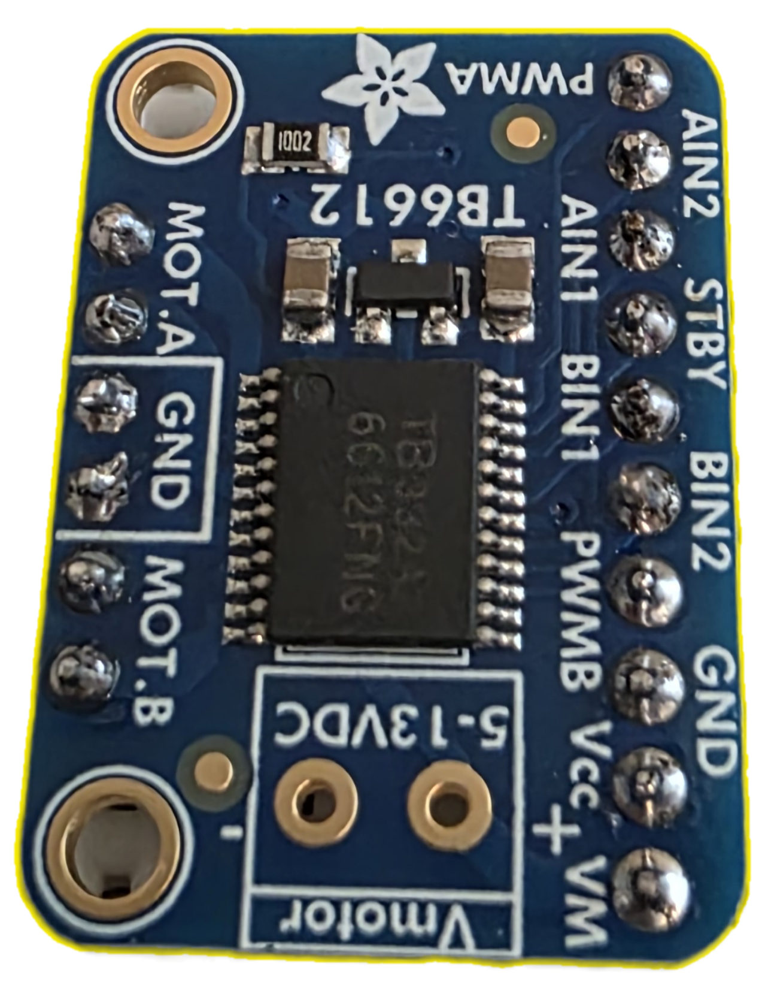
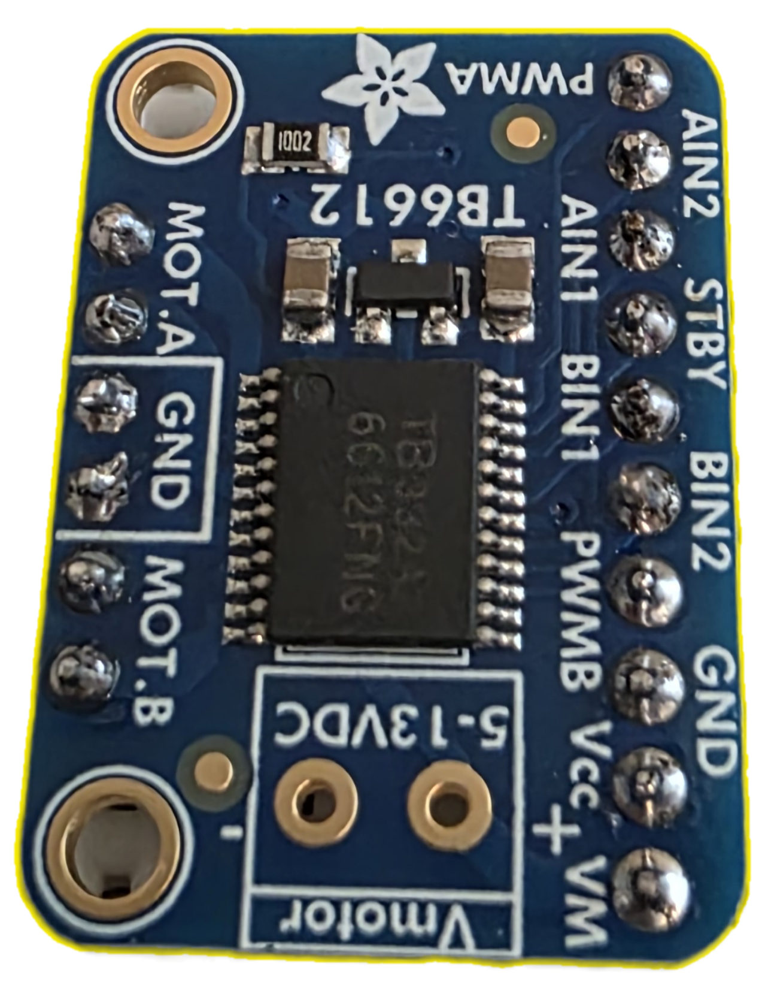
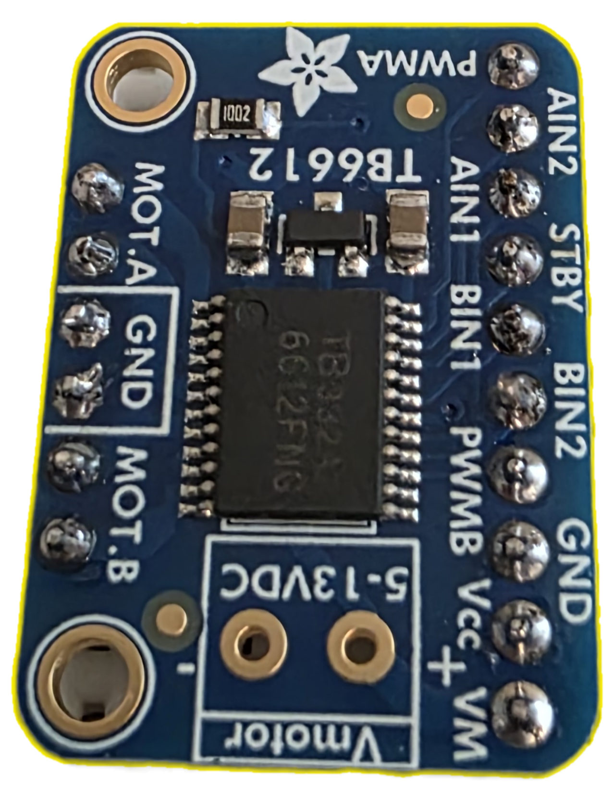
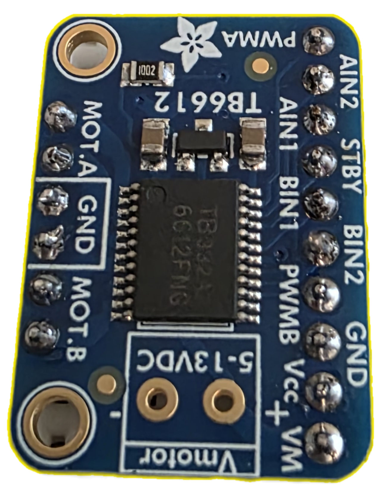

1961 Falcon Resto-Mod! - Lola
 

 

Overview
This custom data acquisition system will integrate into a 1961 Ford Falcon, designed to extract and display real-time vehicle data via a Holley Terminator X Max ECU, including RPM, speed, odometer, oil temperature, coolant temperature, battery voltage, and air/fuel ratio.
GitHub Repository: